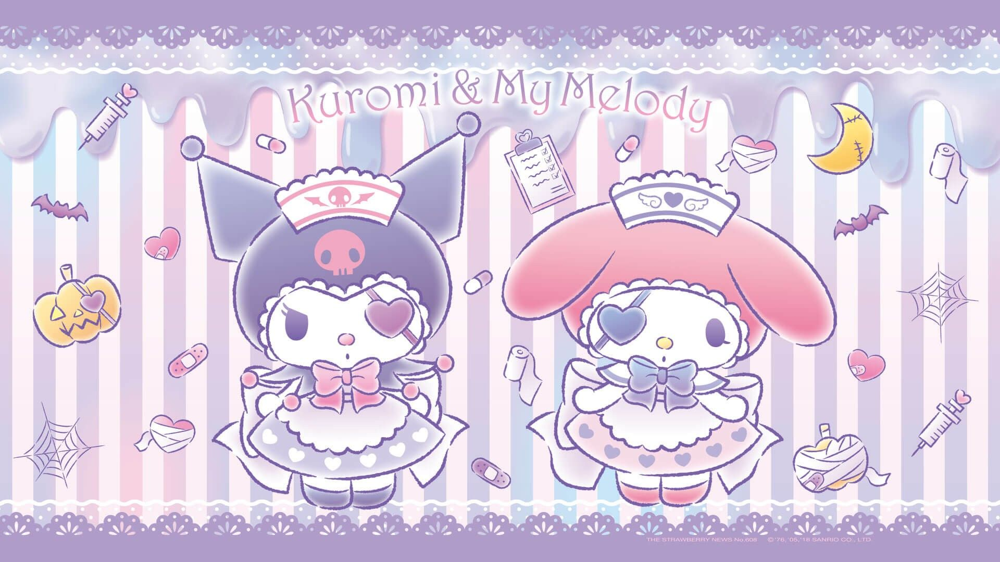
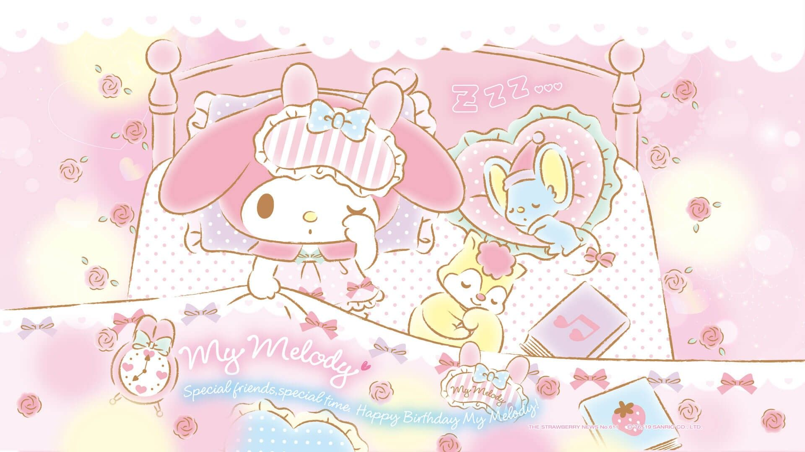
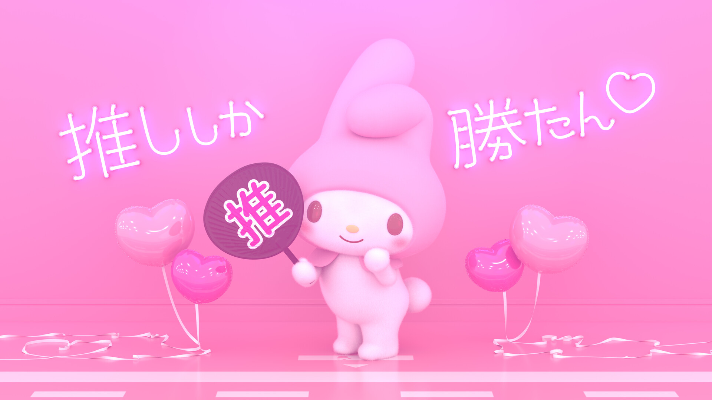
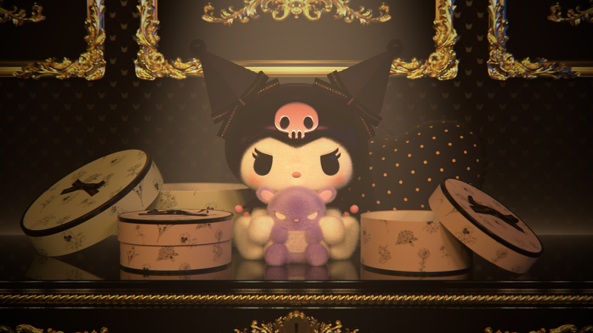
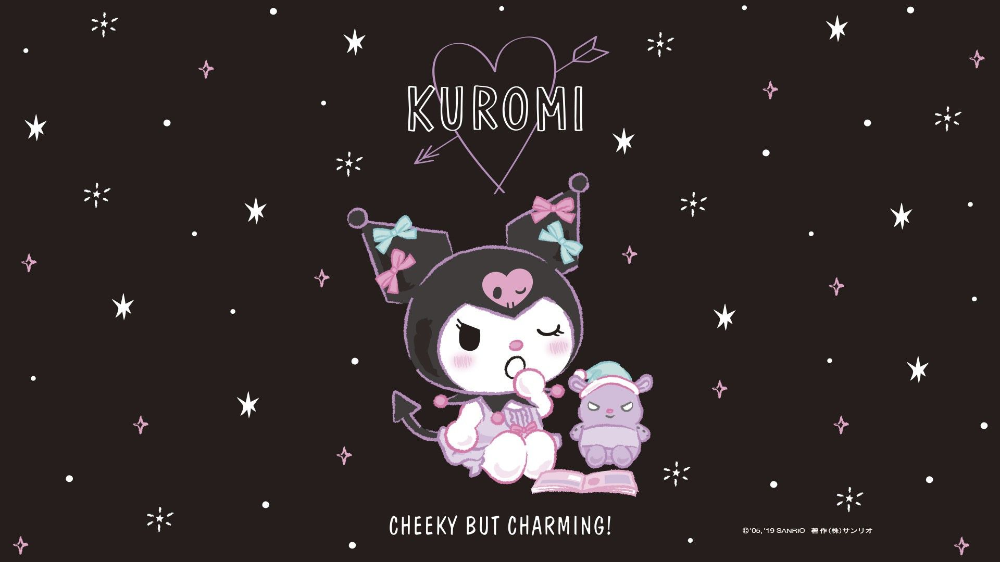
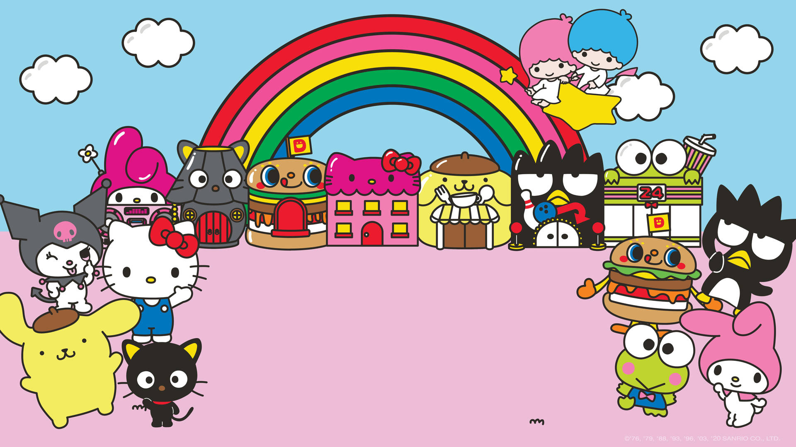
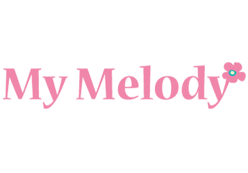

O tema da série gira em torno de Música e Sonhos, que é referenciado para os itens mágicos My Melody e Kuromi. A série tem um enredo cronológico em que se concentra em parar o poder do espírito das trevas cada vez ele foi revivido durante o curso do anime.